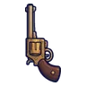
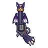
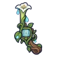
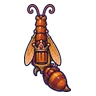
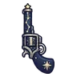
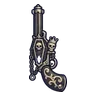
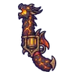
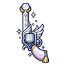

ปืนพกคู่ลูกโอ๊ก ปืนพกคู่ลูกโอ๊ก | 1 | 47 | ไม่มีธาตุ | เห็ดน้ำแตกตัว 0.25% |
 ปืนพกคู่ทองเหลือง | 1 | 44 | ไม่มีธาตุ | อาวุธเริ่มต้นของสาย (ได้ตอนเปลี่ยนอาชีพ) |
 ปืนพกคู่กระป๋อง ปืนพกคู่กระป๋อง | 5 | 48 | ไม่มีธาตุ | ผีขุดหลุม 0.25% |
| ปืนพกคู่ฉีดน้ำสไลม์ | 8 | 42 | น้ำ | ปลาไหลมุดโคลน 0.06% |
 ปืนพกคู่เขี้ยวหมูป่า ปืนพกคู่เขี้ยวหมูป่า | 12 | 48 | ดิน | หมูป่าเขี้ยวตัน ร่างเขาเงิน 0.25% |
 ปืนพกคู่เหล็กในผึ้ง ปืนพกคู่เหล็กในผึ้ง | 14 | 42 | ลม | ผึ้งยักษ์ 0.06% |
 ปืนพกคู่แมงมุมถ้ำ ปืนพกคู่แมงมุมถ้ำ | 16 | 44 | พิษ | แมงมุมถ้ำ 0.12% |
 ปืนพกคู่หิ่งห้อย ปืนพกคู่หิ่งห้อย | 20 | 44 | ไม่มีธาตุ | มดพยาบาล 0.12% |
 ปืนพกคู่ราชาค้างคาว | 24 | 58 | มืด | ราตรีราชาค้างคาว 0.5% |
 ปืนพกคู่หกลำกล้อง ปืนพกคู่หกลำกล้อง | 27 | 79 | ไม่มีธาตุ | ปลาไหลมุดโคลน 0.25% |
 ปืนพกคู่หมาป่าเงาจันทร์ ปืนพกคู่หมาป่าเงาจันทร์ | 29 | 71 | มืด | ม้ากลวง 0.12% |
 ปืนพกคู่ผีผ้าห่ม ปืนพกคู่ผีผ้าห่ม | 31 | 68 | วิญญาณ | ภูตเถ้าถ่าน 0.06% |
 ปืนพกคู่ถ่านคุ ปืนพกคู่ถ่านคุ | 34 | 79 | ไฟ | แม่มดเทียนไข 0.25% |
 ปืนพกคู่หินมาร์มอต ปืนพกคู่หินมาร์มอต | 36 | 77 | ดิน | มาร์มอตหินผา ร่างขนมะกอก 0.5% |
 ปืนพกคู่ปอดสปอร์ ปืนพกคู่ปอดสปอร์ | 36 | 75 | พิษ | ปอดสปอร์ ร่างสปอร์ทอง 0.5% |
 ปืนพกคู่เขาแกะเมฆ ปืนพกคู่เขาแกะเมฆ | 36 | 71 | ลม | นกกระจอกพายุ 0.12% |
 ปืนพกคู่ดอกราตรี | 39 | 68 | น้ำ | ซาลาแมนเดอร์น้ำ 0.06% |
 ปืนพกคู่ราชาเห็ดเรืองแสง ปืนพกคู่ราชาเห็ดเรืองแสง | 40 | 92 | พิษ | ราชาเห็ดเรืองแสง 0.5% |
 ปืนพกคู่กระดูกทหาร ปืนพกคู่กระดูกทหาร | 42 | 77 | ไม่มีธาตุ | ตัวอ่อนต้นแม่พิษ 0.25% |
 ปืนพกคู่ก้ามแมงป่อง ปืนพกคู่ก้ามแมงป่อง | 44 | 71 | พิษ | แมงป่องแดง 0.12% |
 ปืนพกคู่นางพญามด | 45 | 92 | ดิน | รังนางพญามด 0.5% |
 ปืนพกคู่ตะเกียงแคมป์ ปืนพกคู่ตะเกียงแคมป์ | 46 | 68 | ศักดิ์สิทธิ์ | หมอผีกระดูก 0.06% |
 ปืนพกคู่ตอไม้ผี ปืนพกคู่ตอไม้ผี | 48 | 71 | ไม่มีธาตุ | แพะผาหน้าผา 0.12% |
 ปืนพกคู่ดวลเหล็กกล้า ปืนพกคู่ดวลเหล็กกล้า | 52 | 109 | ไม่มีธาตุ | อัศวินโล่หลุมศพ 0.25% |
 ปืนพกคู่เทียนวิญญาณ ปืนพกคู่เทียนวิญญาณ | 54 | 93 | วิญญาณ | คนงานเหมืองผี 0.06% |
 ปืนพกคู่ดอกไม้กินคน ปืนพกคู่ดอกไม้กินคน | 55 | 98 | ไม่มีธาตุ | ผีพายุทราย 0.12% |
 ปืนพกคู่ขวดพิษ ปืนพกคู่ขวดพิษ | 56 | 98 | พิษ | อิมป์ขวดพิษ ร่างทอง 0.24% |
 ปืนพกคู่คางคกพิษ ปืนพกคู่คางคกพิษ | 58 | 108 | พิษ | คางคกพิษ 0.25% |
 ปืนพกคู่กัปปะ ปืนพกคู่กัปปะ | 61 | 98 | น้ำ | แพะภูเขา 0.12% |
 ปืนพกคู่กลุ่มดาว | 63 | 93 | ศักดิ์สิทธิ์ | มดทหาร 0.06% |
 ปืนพกคู่กล่องดนตรี ปืนพกคู่กล่องดนตรี | 66 | 98 | ไม่มีธาตุ | หุ่นไร้หน้า ร่างไม้ดำ 0.12% |
 ปืนพกคู่ท่อระบาย ปืนพกคู่ท่อระบาย | 68 | 109 | พิษ | กบท่อระบาย 0.25% |
 ปืนพกคู่เมฆฟ้าร้อง ปืนพกคู่เมฆฟ้าร้อง | 68 | 93 | ลม | ผีพายุทราย 0.06% |
 ปืนพกคู่นกฮูก ปืนพกคู่นกฮูก | 70 | 98 | ไม่มีธาตุ | ลูกนกฮูกจ่าฝูง 0.12% |
 ปืนพกคู่ราชาสุสาน | 74 | 127 | มืด | บัลลังก์ราชาสุสาน 0.5% |
 ปืนพกคู่โกเลมลาวา ปืนพกคู่โกเลมลาวา | 77 | 130 | ไฟ | โกเลมลาวา 0.25% |
 ปืนพกคู่นกกระสาเงา ปืนพกคู่นกกระสาเงา | 80 | 123 | มืด | กวางไร้แสง 0.12% |
 ปืนลูกโม่รากเหมือง ปืนลูกโม่รากเหมือง | 82 | 135 | ไฟ | บอสผู้ถูกรากสิง |
 ปืนพกคู่ด้วงแรด ปืนพกคู่ด้วงแรด | 83 | 138 | ไม่มีธาตุ | ชาวเมืองหมอก 0.25% |
 ปืนพกคู่ดาวหาง ปืนพกคู่ดาวหาง | 86 | 123 | ไม่มีธาตุ | หมาจรเมืองหลวง 0.12% |
 ปืนพกคู่อิมป์เปลวไฟ ปืนพกคู่อิมป์เปลวไฟ | 88 | 118 | ไฟ | อิมป์เปลวไฟ 0.06% |
 ปืนพกคู่คลื่นยักษ์ ปืนพกคู่คลื่นยักษ์ | 90 | 118 | น้ำ | ผู้จุดตะเกียงรุ่นแรก ร่างทอง 0.06% |
 ปืนพกคู่ช่างเอก ปืนพกคู่ช่างเอก | 92 | 130 | ไม่มีธาตุ | แร็พเตอร์ใบไม้ ร่างขนนก 0.25% |
 ปืนพกคู่ภูตพงไพร ปืนพกคู่ภูตพงไพร | 94 | 118 | วิญญาณ | ผู้จุดตะเกียงรุ่นแรก ร่างทอง 0.06% |
 ปืนพกคู่มังกรลาวา | 97 | 161 | ไฟ | หัวใจมังกรลาวา 0.5% |
 ปืนพกคู่แสงจันทร์นิรันดร์ | 99 | 174 | มืด | ดรอปทั่วโลก Lv 90+ |